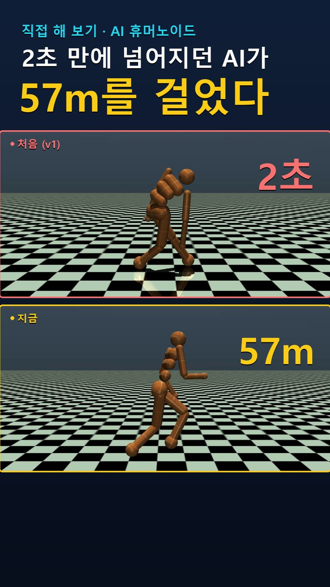
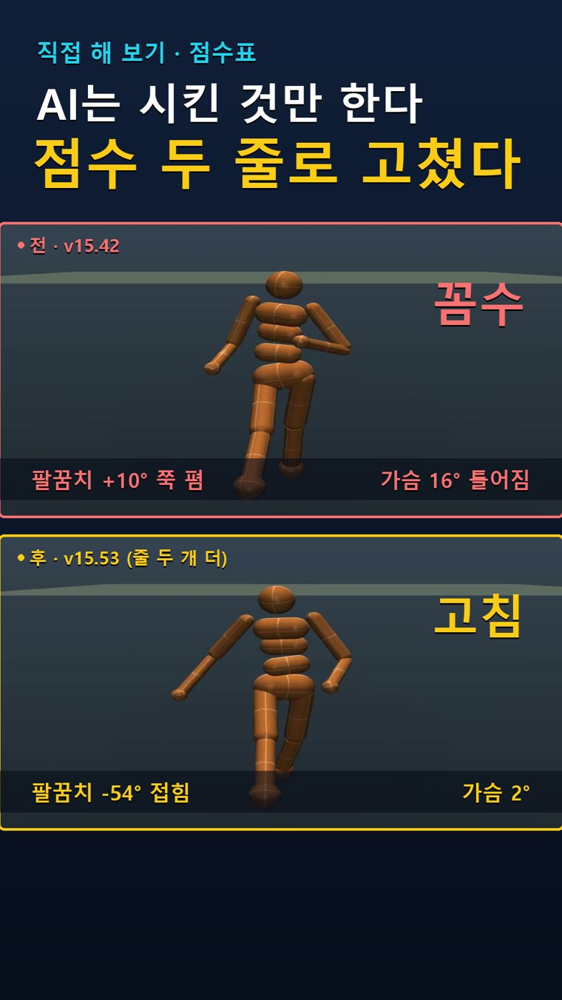

Series · 🧪 직접 해 보기
강화학습을 직접 돌려 보며 겪은 실패와 고친 점을 그대로 보여 드려요. 모든 버전을 같은 카메라 · 같은 시작 조건으로 다시 녹화해서, 무엇이 달라졌는지 한눈에 비교할 수 있게 했어요.
걷는 법을 한 번도 가르치지 않은 사람 모양 로봇. 규칙은 "넘어지면 점수 깎임, 앞으로 가면 점수" 두 개뿐이었어요. 100만 번 연습해도 2초 만에 넘어지던 로봇이, 점수표를 고치자 같은 15초 동안 57m를 걷게 됐어요. 69번의 실험이었습니다.
57m를 걷는데 팔이 좀 이상하다? 점수표에 팔 얘기가 한 줄도 없으니, AI는 팔꿈치를 쭉 편 채(+10°) 휘두르고 가슴도 16° 틀어진 채 걸었어요. "팔을 쭉 펴면 −", "가슴이 옆을 보면 −" 두 줄을 더하자 팔꿈치는 −54°로 접히고 가슴은 2°로 바로 섰어요.
요령은 하나 — 한 번에 한 줄만 고치고, 영상으로 확인하기.

Free Kit
무료 키트 ④ 보상 설계 워크시트로 내 로봇에게 줄 점수 3가지를 정하고, 로봇이 찾을 꼼수를 미리 막아 봐요.